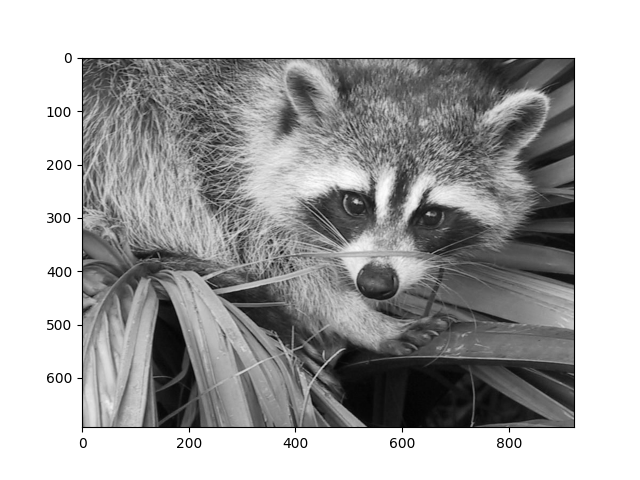

Note
Click here to download the full example code
12.1.10.2.1. Later shifted image¶
In this demo the lateral image shift is determined.
import numpy as np
import scipy
import scipy.misc
import scipy.ndimage
import matplotlib.pyplot as plt
from numpy.typing import ArrayLike
def plotImage(image: ArrayLike, cmap: str="gray"):
plt.figure()
plt.gray()
plt.imshow(image, cmap=cmap)
plt.show()
if scipy.__version__ <= "0.14.0":
# removed due to licensing reasons
image = scipy.misc.lena()
else:
image = scipy.misc.face()
# Convert the image
R = image[:, :, 0]
G = image[:, :, 1]
B = image[:, :, 2]
image = R * 299. / 1000 + G * 587. / 1000 + B * 114. / 1000
plotImage(image)
Amount of pixel shift in x- and y-direction
xPixelShift = 16
yPixelShift = -7
Determine the ROI size: relative (centered) size of original image (relativeSize=1: original size).
row, col = image.shape
relativeSize = np.floor(min(1 - abs(xPixelShift) / col, 1 - abs(yPixelShift) / row) * 10) / 10
x0 = int((col - col * relativeSize) / 2)
x1 = col - x0 + 1
y0 = int((row - row * relativeSize) / 2)
y1 = row - y0 + 1
not shifted ROI
image1 = image[y0:y1, x0:x1].copy()
plotImage(image1)
# Shifted ROI
image2 = image[y0 + yPixelShift : y1 + yPixelShift, x0 + xPixelShift : x1 + xPixelShift].copy()
plotImage(image2)
- 
Determine the pixel shift using discrete fast fourier transformation and complex conjugation of image2.
image1FFT = np.fft.fft2(image1)
image2FFT = np.conjugate(np.fft.fft2(image2))
# inverse fourier transformation of product -> equal to cross correlation
imageCCor = np.real(np.fft.ifft2((image1FFT * image2FFT)))
# Shift the zero-frequency component to the center of the spectrum
imageCCorShift = np.fft.fftshift(imageCCor)
plotImage(imageCCorShift, "hot")
Determine the distance of the maximum from the center
row, col = image1.shape
yShift, xShift = np.unravel_index(np.argmax(imageCCorShift), (row, col))
yShift -= int(row / 2)
xShift -= int(col / 2)
print("shift of image1 in x-direction [pixel]: " + str(xShift))
print("shift of image1 in y-direction [pixel]: " + str(yShift))
shift of image1 in x-direction [pixel]: 16
shift of image1 in y-direction [pixel]: -7
Total running time of the script: ( 0 minutes 2.547 seconds)